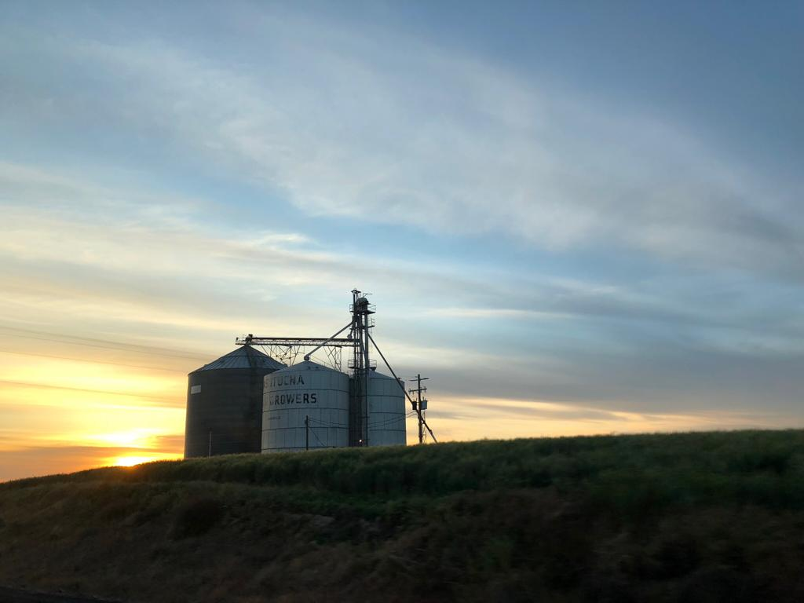
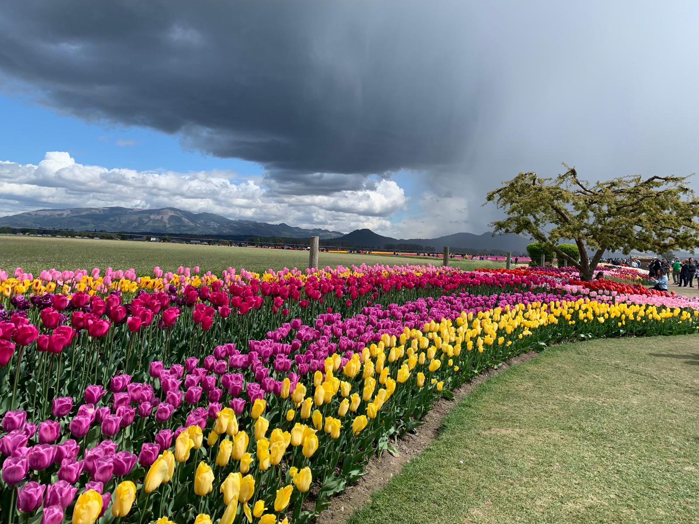
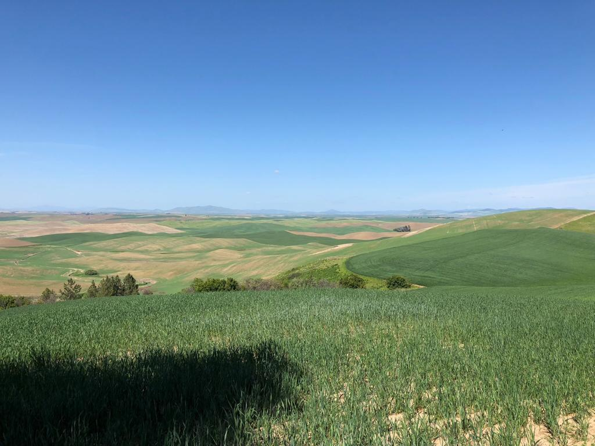

1 / 18

Tulip Festival
2 / 18

Palouse Falls
3 / 18

Mount Rainier
4 / 18

Bryce Cannyon National Park
5 / 18

Crater Lake
6 / 18

Tulip Festival
7 / 18
Bryce Cannyon National Park
8 / 18

Bryce Cannyon National Park
9 / 18
Bryce Cannyon National Park
10 / 18
Bryce Cannyon National Park
11 / 18
Bryce Cannyon National Park
12 / 18
Palouse Falls
13 / 18
Palouse Falls
14 / 18
Palouse Falls
15 / 18

Palouse Falls
16 / 18
Tulip Festival
17 / 18
Tulip Festival
18 / 18
Tulip Festival